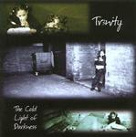

| Artist: | Tr3nity |
| Title: | The Cold Light Of Darkness |
| Label: | Cyclops CYCL 111 |
| Length(s): | 65 minutes |
| Year(s) of release: | 2001 |
| Month of review: | [09/2002] |
| 1) | Eyes Of A Child | 15.12 |
| 2) | The Mask | 5.57 |
| 3) | Into The Dark | 9.40 |
| 4) | Which Way? | 13.07 |
The Exposure Suite
| 5) | The Film | 5.40 |
| 6) | Help Me | 4.16 |
| 7) | Is There A Paradise? | 3.51 |
| 8) | Can't You See? | 7.44 |
We move right into The Mask, friendlier with acoustic guitar and soft keyboards. We percolate on through the softly sung, intimately whispered vocal parts. Besides being able to say that the band seem to be influenced mainly by the accessible symphonic rock from the UK in the eighties and early nineties, I can not really give any definite influences. Like on the previous song, the band operates in a rather mellow mood, making the music slide down easily enough, but also giving the music a cliché feel. Through it all, the bass winds its way almost unnoticed, while the guitar restricts itself to bluesy lead injections.
Time for some thunder and rain in Into The Dark. Friendly acoustic guitar and a dancing piano open the music to this one. There is a Genesis feel (Wind And Wuthering) involved here. The opening vocal melody harkens back to the first track, then we continue with a rather easy-going melody and plaintive lyrics in the style of the previous tracks. This is all a bit too easy and too tearful for me, though. The instrumental middle part is better, with some forceful guitar and nice support from the keyboards, certainly a bit less smooth, then the rest. Then the keyboardist suddenly goes into Mark Kelly overdrive with the rest of the band dragging along. After this long and meandering keyboard solo, the guitar comes back in for his solo.
Which Way? is an up-beat track with a strongly bluesy feel and a gospel choir in the back. Of course, we get a swirly keyboard solo as well, alternating with the bluesy guitar lead. After five minutes or so, the song changes character, going for the burpy and bleepy with some Floydian style material (reminding us of when we were young and we shun like the sun). Quite beautiful and subtle, building up to a majestic finale in a style we are all familiar with.
The final four tracks form together the twenty minute Exposure suite. The first of these is the largely acoustic The Film, which has keyboards and lead electric guitar as well, but they stay in the back. In Help Me the depression of the protagonist is evident in both music and lyrics. The clock ticks evenly, the vocals sound dreary. Piano opens on Is There A Paradise? with a mellow and memorable vocal melody. At times I am reminded of Madmen & Dreamers, with a somewhat musical like approach and accessibility. This is in fact the case on much of the Exposure Suite where the typical prog outings and solo's on the four earlier tracks are not any more present. The closing part of the Suite continues the line of the song so far, with a gospel style ending and soulful, somewhat angry vocals.